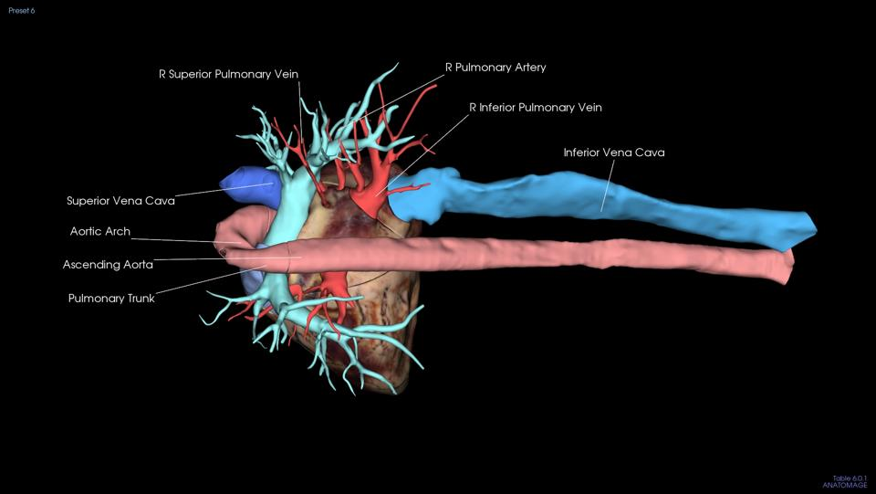
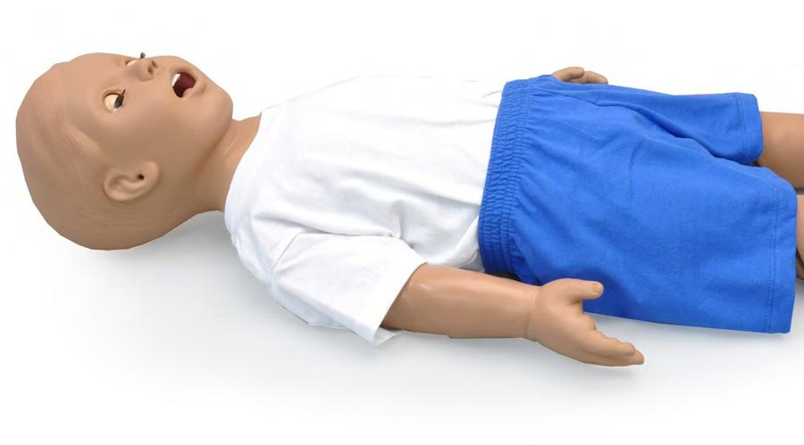
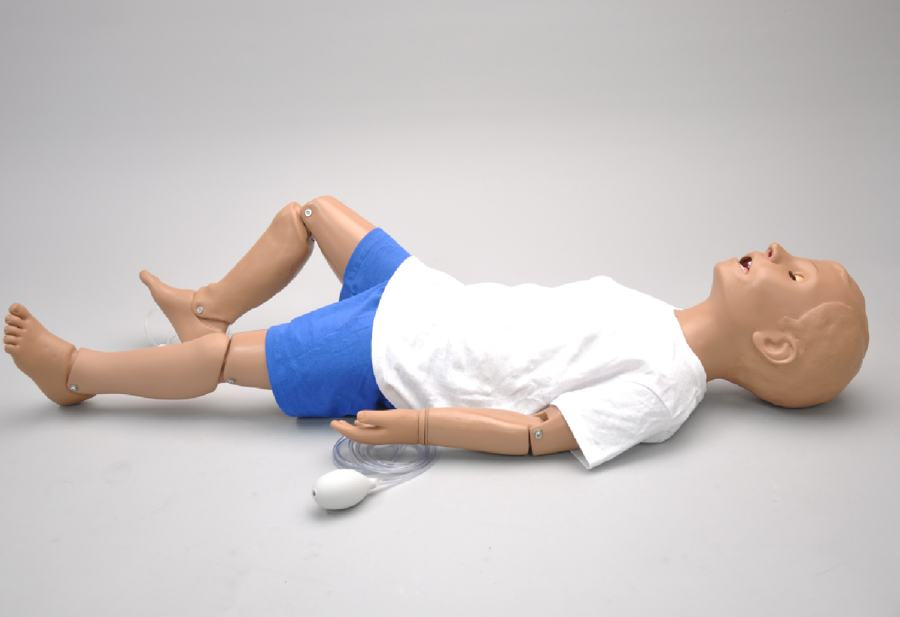
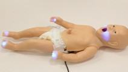
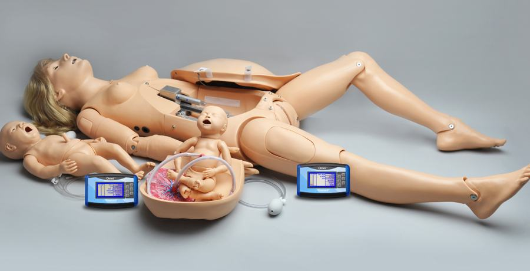
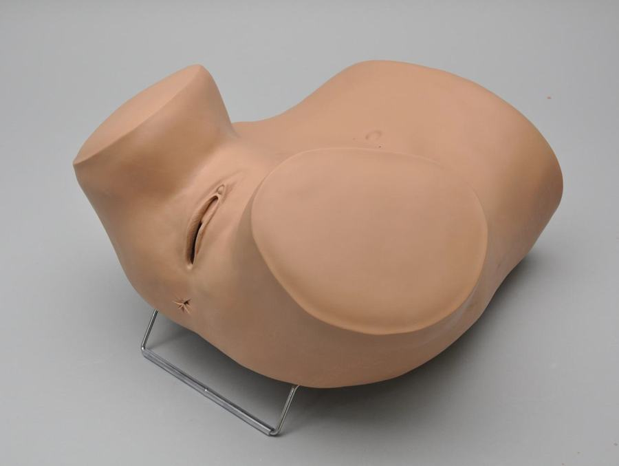

UPDS · Carrera de Medicina · Laboratorio de simulación
Elige el muñeco o equipo con el que vas a practicar. Cada guía tiene la preparación, los pasos de cada procedimiento, puntos clínicos para el Revalida y el cuidado del equipo.

Anatomía
Table EDU 12.0
Disección virtual, planos, TC, prácticas guiadas con listas ES–PT y quiz.
10 sistemas · 274 vistas
Abrir guía →
Pediatría
Gaumard S117 / S117.250
Vía aérea, RCP, acceso IV, intraóseo y femoral, ostomías, sondaje y auscultación.
16 procedimientos · TET 3.5
Abrir guía →
Pediatría
Gaumard S157.250
Vía aérea, RCP, acceso vascular, ostomías, acceso subclavio y drenaje torácico.
15 procedimientos · TET 5.0–5.5
Abrir guía →
Neonatología
Gaumard S320
Ventilación, intubación, RCP 3:1, cateterismo umbilical e intraóseo.
9 procedimientos · cianosis SmartSkin
Abrir guía →
Obstetricia
Gaumard S550.100
Leopold, parto, ventosa, distocia, cesárea, nalgas, hemorragia posparto y episiotomía.
17 procedimientos · parto automático
Abrir guía →
Ginecología
Gaumard S504.100
Espéculo, examen bimanual, DIU, oclusión tubárica y AMV.
12 procedimientos · 6 úteros
Abrir guía →